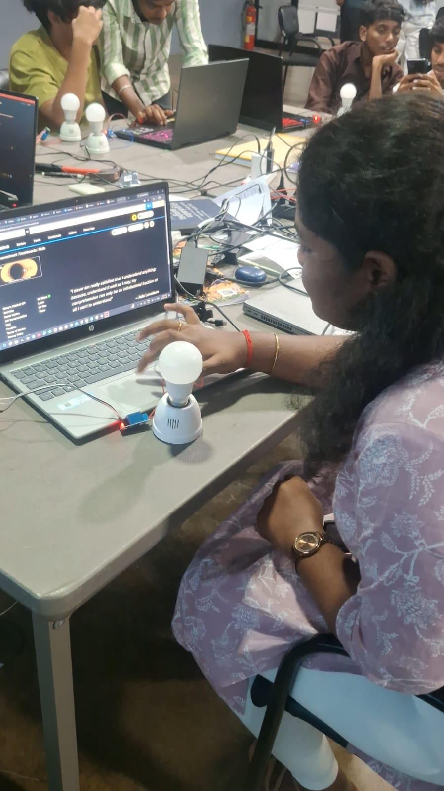
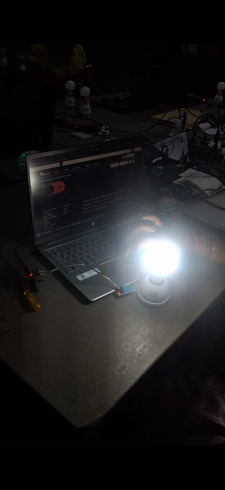

Project Overview
The objective of this assignment was to understand how an IoT device can communicate with a cloud platform and receive control commands remotely.
I used an ESP32 together with Adafruit IO to create a cloud-based control system. The Adafruit IO dashboard provided the user interface while the ESP32 acted as the connected IoT device.
This assignment helped me understand the relationship between an IoT device, MQTT communication, cloud feeds and a dashboard.
MQTT & Adafruit IO Concepts
Adafruit IO
Adafruit IO is a cloud-based IoT platform that can receive, store and display data and provide interfaces for connected devices.
MQTT
MQTT is a lightweight messaging protocol commonly used for communication between IoT devices and cloud services.
Publisher
A publisher sends information or commands through an MQTT communication channel.
Subscriber
A subscriber receives information from the relevant MQTT communication channel.
Broker
The MQTT broker manages communication between publishers and subscribers.
Feed
In Adafruit IO, feeds act as communication channels for IoT data and control values.
IoT Communication Architecture
A command selected through the Adafruit IO dashboard is communicated through the cloud using MQTT. The ESP32 receives the corresponding value and uses it to control the connected output.
Tools Used
Hardware
- ESP32 development board
- Output control circuit
- Connecting wires
- Computer
Software & Platforms
- Arduino IDE
- ESP32 board support
- Adafruit IO
- Web browser
- MQTT communication
Hardware & Cloud Setup
- I prepared the ESP32 and the connected output circuit.
- I checked the physical connections before starting the cloud communication test.
- I connected the ESP32 to a Wi-Fi network.
- I created the required Adafruit IO account and opened the cloud dashboard.
- I configured the required feed used for the control operation.
- I created a dashboard interface so that the output could be controlled from the cloud.
Implementation Process
- I opened Arduino IDE and prepared the ESP32 program.
- The Wi-Fi connection details were configured so that the ESP32 could access the Internet.
- The Adafruit IO connection details were configured in the program.
- The ESP32 established communication with Adafruit IO.
- The ESP32 subscribed to the required cloud feed so that it could receive control values.
- I operated the control interface from the Adafruit IO dashboard.
- The dashboard value was transmitted through the MQTT communication path.
- The ESP32 received the value and changed the connected output accordingly.
Cloud Control Flow
The important difference from the first assignment is that the control command is now passed through a cloud IoT platform rather than being limited to a local ESP32 web server.
Adafruit IO Evidence


The Adafruit IO dashboard image provides evidence of the cloud interface used for the IoT control activity. The bulb-control image documents the corresponding output-control stage.
Problems & Solutions
- Device connectivity: The ESP32 required a working Internet connection before cloud communication could be tested.
- Cloud configuration: The Adafruit IO dashboard and feed had to be configured correctly before testing the ESP32.
- Command verification: I tested the cloud control and checked whether the connected output responded to the received command.
What I Learned
This assignment helped me understand how an IoT device can communicate with a cloud platform instead of depending only on a local network.
I learned the basic role of MQTT communication, publisher and subscriber concepts, cloud feeds and dashboard-based device control.
The activity also gave me practical experience connecting an ESP32-based embedded system with an IoT cloud platform.
Project Repository
This assignment page is maintained as part of my IoT Learning portfolio.
View Assignment on GitHub →